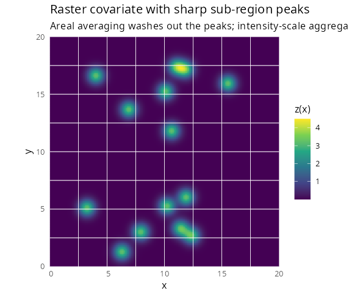
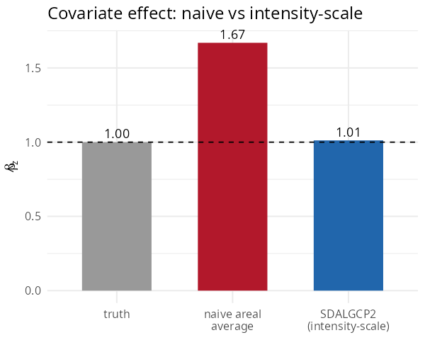

2. Spatially continuous (raster) predictors
Source:vignettes/raster-covariates.Rmd
raster-covariates.RmdCovariates often vary within an areal unit —
elevation, pollution from point sources, distance to a road. The usual
shortcut is to average the covariate over each polygon and put the
average into a Poisson model. Under the nonlinear log link this is
biased. SDALGCP2 instead reads the
covariate from a raster at the candidate points and aggregates it on the
intensity scale.
The problem with averaging
A region’s expected count is
.
Averaging the covariate first and exponentiating second is not the same
as exponentiating first and averaging: when
has sharp features, the average washes them out but the exponential does
not. SDALGCP2 uses the correct log-sum-exp aggregation
(full derivation in
math/raster-covariates-derivation.pdf).

A covariate with sharp sub-region peaks (e.g. point exposure sources). White lines are region borders; the peaks sit inside regions and are lost by areal averaging.
Fitting with a raster
Pass a terra::SpatRaster whose layers are named in the
formula:
library(SDALGCP2)
library(sf)
library(terra)
# 'exposure' is a SpatRaster with a layer named 'z'; regions is an sf of counts
fit <- sdalgcp(cases ~ z + offset(log(pop)), data = regions, rasters = exposure)
summary(fit)The covariate z is read from the raster at the candidate
points inside each region — regions does not need a
z column.
Areal averaging is biased; intensity-scale is not
On simulated data with sharp peaks (true effect ):

#> truth 1.00
#> naive areal average 1.67 (+67% bias)
#> SDALGCP2 (intensity-scale) 1.01The bias is largest when the within-region covariate variance is correlated with the region mean (sharp localised features); for smooth covariates the two approaches nearly agree.